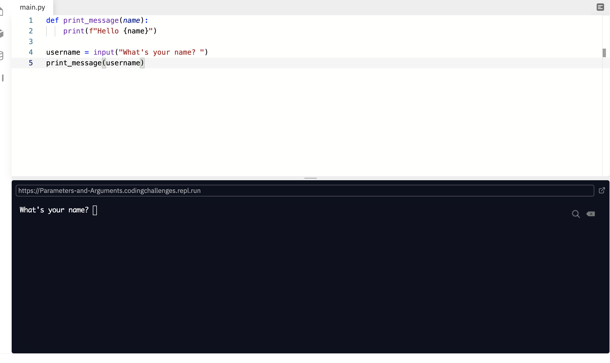
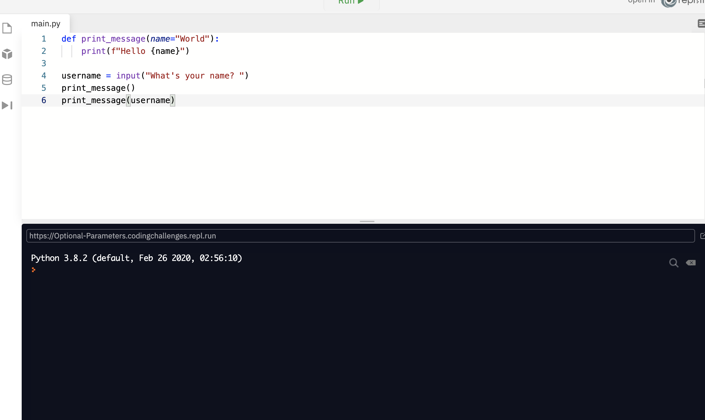
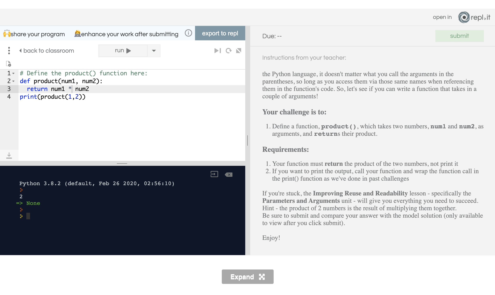
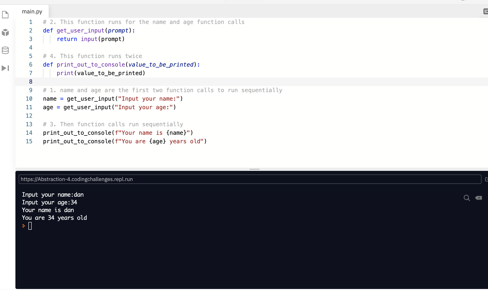
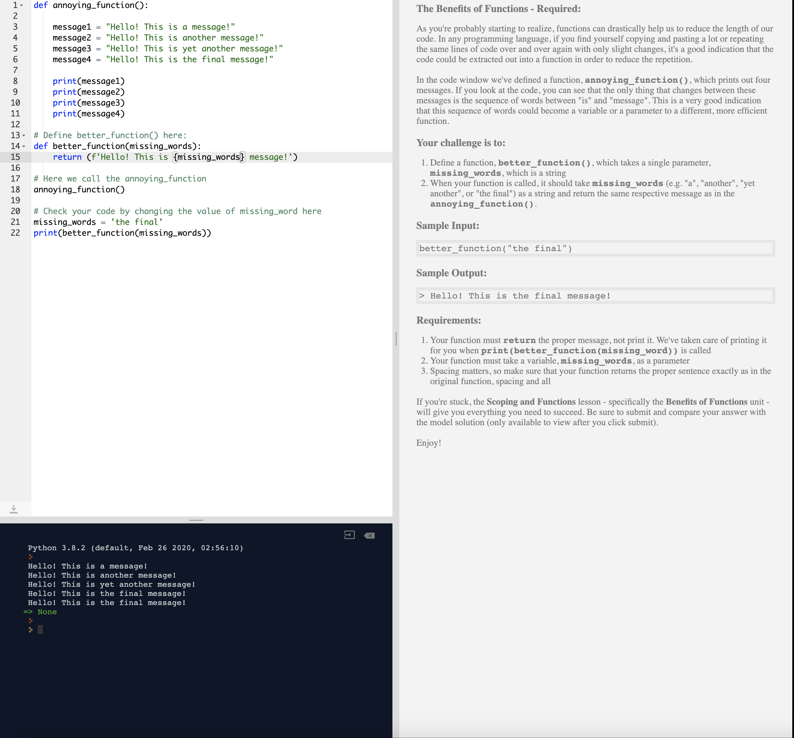
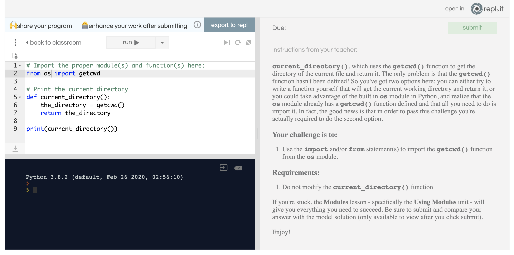
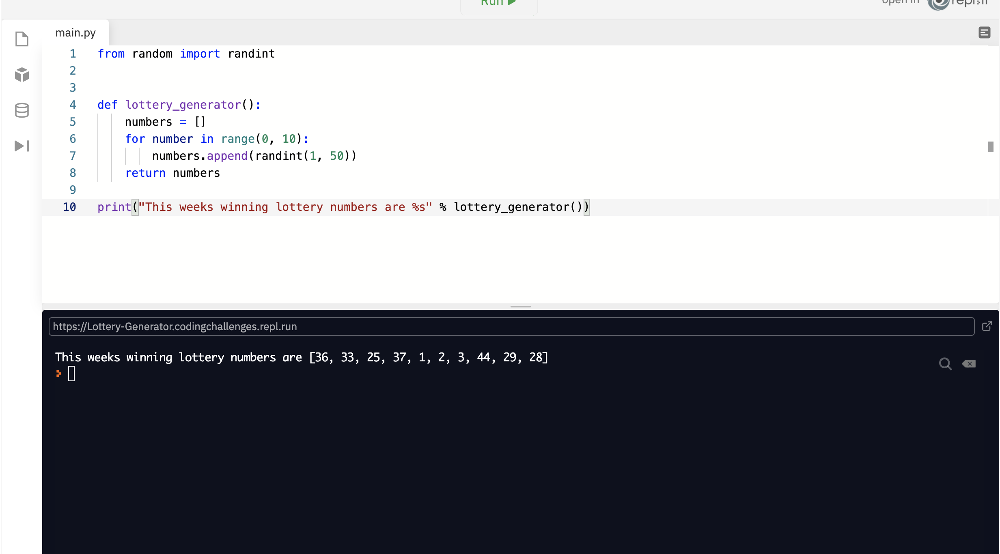
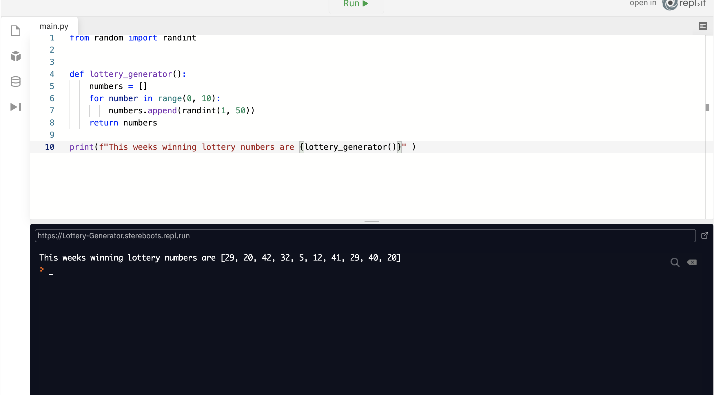

Notes page 5
Up until now we’ve been writing little pieces of code and haven’t been concerned about the structure or readability of our application. What I mean by this is that all the code we’ve written so far has been at the top level of our Python files. There once was a time when applications were written in this fashion, but the sheer amount of what makes up the basis of an application would become unwieldy very quickly. Thankfully there are specific constructs that we can use to help improve this. Functions allow us to write a chunk of code that we can invoke whenever we choose. We can also introduce the use of code comments to explain to a developer how it is individual sections of code function.
They allow us to group pieces of logical statements that will perform a particular task
Most code will be broken out into functions. Functions are a grouping of statements that work together to perform any actions that we may need
We’ve used plenty of different functions at this point, like print(), input(), range(), and len(). These are all function that Python provides for us, so we don’t have to write all of the logic to perform these tasks ourselves. Not only does this mean that we can reuse the same pieces of code, but also helps to improve the readability of the code. For example, print() would be quite difficult to implement if we had to write out the logic every time that we wanted to print something out to the console. It would be much more beneficial if we could just write the code once and then use it again and again. Not only that, but the word print is much easier to read and understand than the code would be if we were to write out all of that code ourselves. Let’s take a look at how we can create some functions:
def print_message():
print("Hello World!")
print_message()
In the example, we have created a function definition. This defines what the function will do. The code that we use to define a function is as follows:
def:
This is the keyword that we use to tell Python that we are creating a function definition.
print_message: This is the name that we’ve decided to give our function. Be sure to give your functions meaningful names so that when other people try to use your code, they’ll able to make sense of what the function does without having to read the code in the function.
(): The parentheses denote the parameters that a function takes. In this example, we don’t have any parameters yet, but we’ll start adding some in soon.
After all of this, we have the code inside of our function. The code inside the function is the actual logic that we wish to perform. In this instance, we just print out Hello World. Lastly, on line 4 we invoke that function which works in the same way that we used print(), only this time we don’t have arguments to pass as the function doesn’t take any parameters. Remove the code from line 4 and rerun the code to see what happens. Nothing, right? That’s because just defining the function. The function doesn’t do anything until we invoke or call it.
# Define the say_hello() function def say_hello(): return("Hello world!") print("Hello world!") say_hello()
Parameters and Arguments
Allows us to provide functions with data and context
We might need our functions to perform actions on specific pieces of data. In this case, we would use arguments to pass that part of data to the function
The function that we created in the last example was called print_message, which then prints out Hello World. That’s all well and good, but what if we wanted to say hello to a user instead of saying Hello World. The problem is that our function doesn’t allow for that level of flexibility. One way around this would be to create a function for every name, but that would get very unwieldy, and the codebase would end up being massive! Instead we can use parameters. Parameters allow us to provide a function with input data that we want it to use. Let’s update our previous example to use a parameter to greet a user with:
Now we’ve updated our function to take a parameter of name, and we use that name to greet the user. At line 5 we call the print_message function by passing through an argument. A function's parameters are the special variables used by a function to handle this input, whereas the arguments are the values provided for the parameters when we run the function. For example, on line 1, we create a function that has a parameter named name, and then on line 5 we run that function and pass in the value of the variable username as the argument for that parameter
We can also use optional parameters. Optional parameters will allow us to provide values to a function with some value in case they are not provided when the function is invoked. To do so, we use the assignment operator to set a value to the parameter when we are defining our function. In the example below, we have given the name parameter a default value of World:
We don’t provide an argument when we invoke the function as we do on line 5, the function will just print out Hello World. Notice that we initially stored the value in a variable called username, but inside the function, we’ve called in a name. This is because we’re passing a new variable to the function called name, with the value of username. The name variable cannot be accessed outside of the function. Therefore if we were to try to print name outside of the function, it wouldn’t work. This is known as variable scoping.
You might have noticed that all function definitions in Python end with a set of parentheses, like this:
def some_function():
# Do something
Those parentheses aren't arbitrary. They're actually a sort of container into which we can "pass" arguments on which the function will execute its code. For example, if we wanted to write a function that adds two numbers, the two numbers we're adding together are the "arguments" to our function. Inside the function, they become parameters. We could define such a function like this:
def add_two_numbers(num1, num2):
return num1 + num2
Barring a couple of exceptions surrounding reserved words and keywords built into the Python language, it doesn't matter what you call the arguments in the parentheses, so long as you access them via those same names when referencing them in the function's code. So, let's see if you can write a function that takes in a couple of arguments!
Your challenge is to: Define a function, product(), which takes two numbers, num1 and num2, as arguments, and returns their product. Requirements: Your function must return the product of the two numbers, not print it If you want to print the output, call your function and wrap the function call in the print() function as we've done in past challenges
The scope of a variable
determines the accessibility of a variable, Sometimes we’ll only need variables that are accessible within a function. In which case we’d just define the variable inside a function
Up until now, we’ve been working with the global scope which is the outermost level of a Python file. All of the variables that we declare in the global scope can be accessed inside a function. For example:
my_global_variable = "World"
^^^ this is global scope, same as javascript!
as its outside of this function below!
def print_message():
print(f"Hello {my_global_variable}")
print_message()
However, if we declare a variable inside a function, then that variable will not be accessible by the global scope so is known as the local scope.
def print_message():
my_local_variable = "World"
print("Hello %s" % my_local_variable)
print_message()
print(my_local_variable)
As we can see, Python will throw an error when we try to use my_local_variable outside of the function. We should generally avoid using a global variable. In the examples that we’re covering here, it’s a little more challenging to avoid them, plus we’re only writing simple scripts to help provide an understanding of how the language works. There are some techniques that a developer would use to help build a better, more scalable application using design patterns, but that’s outside the scope of this lesson. For now, though, we’ll use the global scope and avoid it where possible.
Scoping - Required: In the Scoping units you learned that there are two different scopes in Python: global scope and local scope. A variable defined in the global scope can be accessed in any functions also defined in the same scope, while a variable defined inside a function can only be accessed inside that function, since its scope is local to the function itself. If you try to access a local variable outside of the scope it's defined in, you'll get an error message explaining that the variable isn't defined. To demonstrate the use of local and global scopes, in this challenge you're going to define a function that utilizes both.
Your challenge is to: Declare a global variable, my_global_num, which has an integer value of 10. Define a function, add_ten(), which takes no parameters Inside the add_ten() function, declare a local variable, my_local_num, which has an integer value of 5 Return the sum of my_global_num and my_local_num from your add_ten() function Requirements: Your function should return the sum of your global and local variables Your function must not take any parameters
Abstraction allows us to hide complex or monotonous actions or pieces of code that are prone to change into functions
Using functions to abstract pieces makes it easier to reuse code and concepts.
Aside from the ability to reuse code over and over again, functions allow us to build layers of abstraction. One of the perks is that we only need to update our code in one place and those changes will be propagated throughout a more extensive system. We can use functions to abstract some tasks into functions, meaning when we wish to change something, we can change it one place (the function definition), instead of everytime we use that piece of code. An example of this would be, in Python 2, they used a print keyword instead of a print function, and the raw_input function instead of the input function. Let’s have a look at what this would have looked like:
name = raw_input("Input your name:")
age = raw_input("Input your age:")
print "Your name is %s" % name
print "You are %s years old" % age
Now if we wanted to re-write this code in Python 3, we would have to change each of the print keywords and the raw_input function:
name = input("Input your name:")
age = input("Input your age:")
print("Your name is %s" % name)
print("You are %s years old" % age)
Or, what we could do is hide the actual input and output in functions, which means that we’ll only need to update them once. In Python 2, we would have:
def get_user_input(prompt):
return raw_input(prompt)
def print_out_to_console(value_to_be_printed):
print value_to_be_printed
name = get_user_input("Input your name:")
age = get_user_input("Input your age:")
print_out_to_console("Your name is %s" % name)
print_out_to_console("You are %s years old" % age)
Then when we update to Python 3, we would have:
The overall solution is admittedly more verbose, but it means that we have much less work to do when we need to update our code in the future. As codebases grow and grow, learning to use functions to abstract areas of code that are likely to change will make life much easier in the long run!
As you're probably starting to realize, functions can drastically help us to reduce the length of our code. In any programming language, if you find yourself copying and pasting a lot or repeating the same lines of code over and over again with only slight changes, it's a good indication that the code could be extracted out into a function in order to reduce the repetition. In the code window we've defined a function, annoying_function(), which prints out four messages. If you look at the code, you can see that the only thing that changes between these messages is the sequence of words between "is" and "message". This is a very good indication that this sequence of words could become a variable or a parameter to a different, more efficient function. Your challenge is to: Define a function, better_function(), which takes a single parameter, missing_words, which is a string When your function is called, it should take missing_words (e.g. "a", "another", "yet another", or "the final") as a string and return the same respective message as in the annoying_function().
this one was a tricky one with f strings, we need to make sure its written correct like this
def better_function(missing_words):
return (f'Hello! This is {missing_words} message!')
however solution below.
In Python, we call a Python file a module. Python comes with a plethora of modules, but as a developer, we also create modules every time we create our files. We can even import functions, classes, and variables from other modules. One example of one of Python’s built-in modules is random. The random module contains a function called randint. Below is an example of how we can import the randint function from the random module:
from random import randint print(randint(1, 100))p We use the from keyword to target a module and the import keyword to import the specific function from the random module. The randint function takes two arguments which define the range from which to generate a random number. The first argument being the lowest number and the second argument being the highest possible generated number. Our example above generates a random number between 1 and 100.
In Python, a module is just a file. Specifically, it's a file with the extension .py on the end. When you install Python, all it's really doing is placing a bunch of .py files into various folders on your computer. And what is a .py file, exactly? What's in it? Well, it's just a bunch of Python code of course! It's like a word document that just happens to be full of functions and other Python code, just the like ones you've written in recent challenges. The key to understanding Python (and object oriented programming in general) is to understand that everything is just a file that can be imported so that it's functions can be used in your own code. To do this in Python, we use the import statement. In general there are a couple different ways to import a file in Python so that you can use its functions:
In the code window here we've written a small function, current_directory(), which uses the getcwd() function to get the directory of the current file and return it. The only problem is that the getcwd() function hasn't been defined! So you've got two options here: you can either try to write a function yourself that will get the current working directory and return it, or you could take advantage of the built in os module in Python, and realize that the os module already has a getcwd() function defined and that all you need to do is import it. In fact, the good news is that in order to pass this challenge you're actually required to do the second option.
Your challenge is to: Use the import and/or from statement(s) to import the getcwd() function from the os module. Requirements: Do not modify the current_directory() function
in this we just needed to import: we achieve this by
from os import getcwd
see image below.
Generates this week’s lottery numbers!
how do you use it?
We use this to generate a specified number of lottery numbers
Let’s use what we’ve learned so far to create a lottery number generator. Before we can build it, we need to determine precisely how it will work. We have decided that we want to generate ten numbers, each ranging from 1 to 50. Let’s create a function that can do that.
Here we import the randint function. Then we define a new function called lottery_generator. Inside the lottery_generator function, we create an empty list called numbers. After that, we create a for loop a with a range of 0 to 10. For each iteration of the loop, we create a new item in the numbers list by using the append method. The append method will append a new item to the end of the list, and that new item is a randomly generated int from a range between 1 and 50. Once we’ve iterated over the sequence generated by range, we just return the list. Then we print out a message that tells the user what the numbers were for that week’s lottery.
this is the same code using formatted strings, or f strings.
Let’s combine some of the aspects programming that we’ve learned up until now. To do that, we’ll create a game of rock, paper, scissors. This game will cover everything from declaring variables, using conditionals, getting user input, lists, while loops, functions, and the random module. The idea of rock, paper, scissors is that there are two players. Each player picks either rock, paper, or scissors. In a game of rock, paper, scissors:
Rock beats scissors
Scissors beats paper
Paper beats rock
For this to work, we need our two players. Firstly we’ll have a user, and then we’ll have the computer. Then we need a way for a user to choose whether they want rock, paper, or scissors. Then we’ll need to generate a random selection by the computer. Let’s have a look:
First of all, we import randint. Next, we define some functions (compare, get_computers_choice and game_loop). The first function that we’ll invoke is going to be game_loop. Inside game_loop, we have a bool called play_game, and we set that value to true. Next, we create a while loop which will run so long as play_game is true. Then we ask a user to select rock, paper, or scissors. After a user makes their choice, we then need the computer to make a choice. To generate a choice for the computer, we created a new function called get_computers_choice. Inside this function, we declare a list of strings containing the elements Rock, Paper, and Scissors called choices. Next, we need a to get a random number between 0 and 2 that will represent the index that we’ll be accessing from the list of choices; therefore, we’ve named it choice_index. Lastly, we use the choice_index variable to access the relevant item in the choices list. Then we simply return the choice.
Once both the user and computer have made their choices, we need to determine which of them is the victor. We then need to create a function called compare, which will compare the two choices. This function takes two parameters, user and computer. These will represent the choices made by each participant. Inside this function, we have a pretty elaborate if-else ladder. First, we simply check to see if both choices are the same. If this is the case, then we just print out "It’s a tie". Next, we check to see if the user’s choice was rock. If it is, then we have a nested condition to check if the computer’s choice was scissors. If it is scissors, then we need to tell the user that they’ve won by printing out "You win!". Otherwise print "The computer wins!"
We repeat this logic until we’ve checked each possible outcome, and if none of them evaluates to true, then that means that you’ve made an incorrect choice when selecting rock, paper, or scissors. Then we just ask the user if they wish to play again. If their decision is n, then we say, “Thanks for playing!” and set the value of play_game to false, which will exit out of the loop.
Developers spend a lot of time writing code. So much time in fact that revisiting a piece of code that was written a couple of weeks ago may have little to no meaning to that developer, let alone any other developers that may be working on that same project. Judging by the last example, the code can get quite busy, and it can get unwieldy when people try to read it, whether it’s someone else's or if you come back to your code at a later stage. We can use code commenting, which will allow us to write human-readable explanations to our code. Comments will be ignored by the Python interpreter, meaning that we can add in as many comments as we need, without it affecting the speed or performance of our program. We can use some different types of comments. We have single-line comments and multiline comments. An example of a single-line comment is as follows:
# This line of code will print out the phrase "Hello World"
""" This is multi-line comment. We can spread this across as many lines as we need to and it won't impact our computer program at all!!! """
Multiline comments can take up as many lines as you require. The comment itself is put between three opening double quotations and three closing double quotations. Generally speaking, single-line comments are used to explain individual pieces of code, whereas the multi-line comments are used to describe a function, method, class, or module. Ideally, we would use a multiline comment on every function, method, class, or module. The Python name for this is docstring. Let’s add some docstrings and comments to our rock, paper, scissors game to improve the readability.
Now that looks a bit more readable. Not only does it mean that we’ve added in human readable explanations to what’s going on in the code, but it also created some breathing room for the code. Note that we also have some single-line comments across two lines because we only used the multiline comments for our docstrings on the functions.
""" A rock, paper, scissors game written in Python Author: Daniel Thomas Boots """